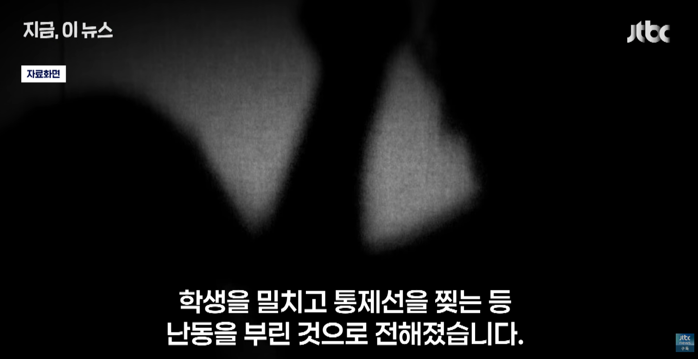

2026년에 "내가 누군지 아느냐?" + "계집애가 어디서 나대?" 콤보 이후에 맞고소....
캬...

2026년에 "내가 누군지 아느냐?" + "계집애가 어디서 나대?" 콤보 이후에 맞고소....
캬...
ㅋㅋㅋㅋㅋㅋㅋ 나왔다 '내가 누군지 아느냐'
쇼와 아재가 개꿀잼이긴 함
이게..2026년 기사맞냐
캬
지랄고쳐질때까지 장도리로 정수리 존나게 내리쳐야
시대에 저항하는 십상남자여..
체육회 끄덕끄덕 ㅋㅋㅋ
여자가 말대꾸..?
자랑스럽다 연세
지금 시대에 아직도 저러네
이야 벌써부터 꼰대력 낭낭하네
나중에 쟤 밑에서 일할 애들 불쌍하다